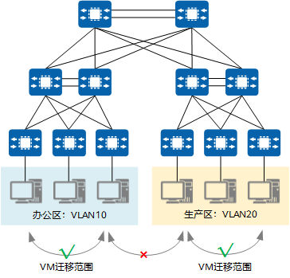
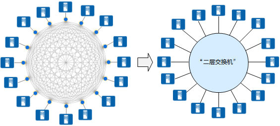
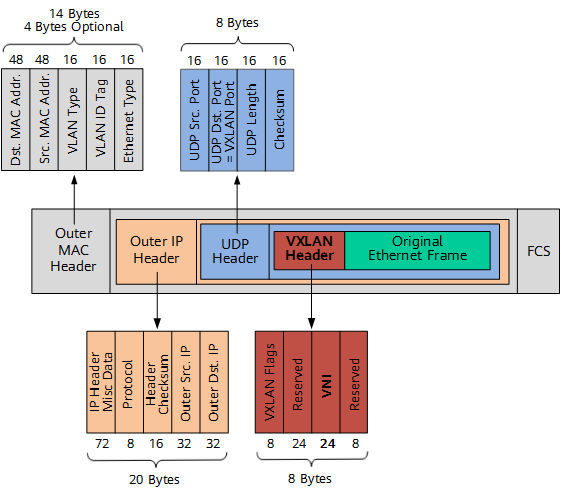
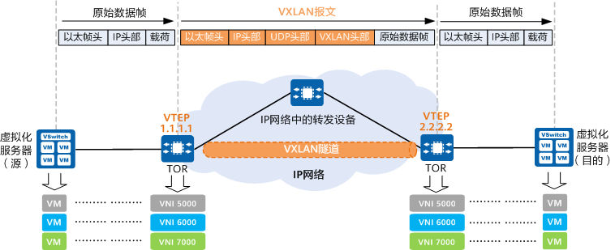
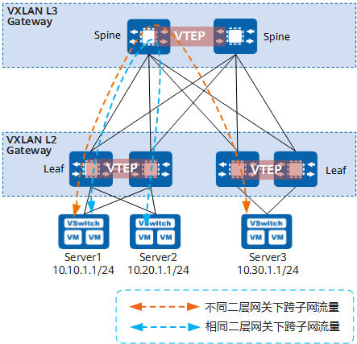
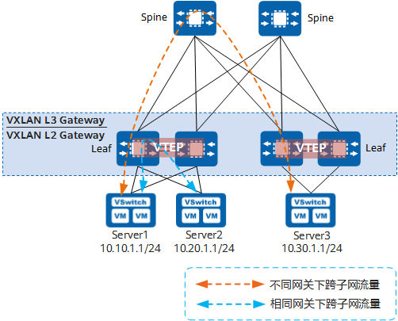
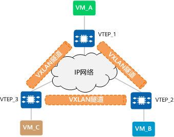
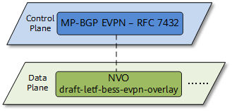
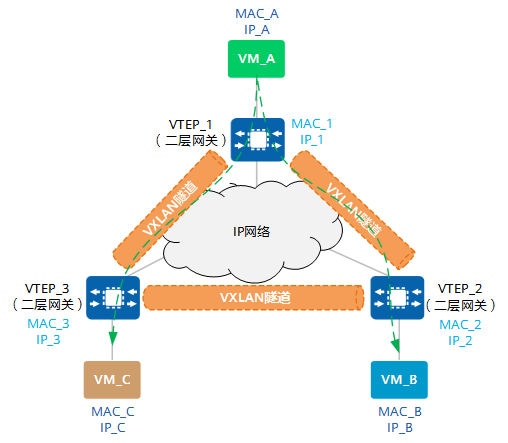
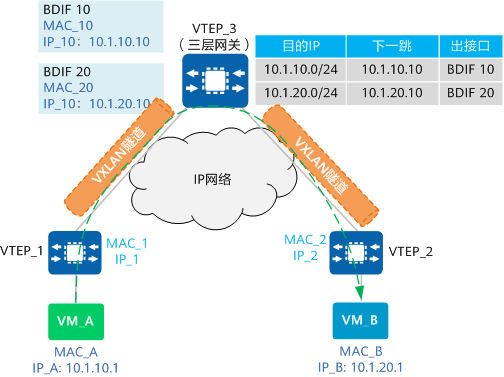

00 什么是VXLAN
VXLAN即虚拟扩展局域网，是大二层网络中广泛使用的网络虚拟化技术。在源网络设备与目的网络设备之间建立一条逻辑VXLAN隧道，采用MAC in UDP（User Datagram Protocol）封装方式，即，将虚拟机发出的原始以太报文完整的封装在UDP报文中，然后在外层使用物理网络的IP报文头和以太报文头封装，这样，封装后的报文就像普通IP报文一样，可以通过路由网络转发，这就像给二层网络的虚拟机插上了路由的翅膀，使虚拟机彻底摆脱了二、三层网络的结构限制。
1. 为什么需要VXLAN？¶
为什么需要VXLAN呢？这和服务器的虚拟化趋势紧密相关，一方面出现了**虚拟机动态迁移**，要求虚拟机在迁移前后的IP和MAC地址不能改变；另一方面，租户数量激增，需要网络提供隔离海量租户的能力。
1.1. 虚拟机动态迁移¶
服务器虚拟化技术是把一台物理服务器虚拟化成多台逻辑服务器，这种逻辑服务器被称为虚拟机（VM）。通过服务器虚拟化，可以有效地提高服务器的利用率，降低能源消耗，降低运营成本，所以虚拟化技术目前得到了广泛的应用。
在服务器虚拟化后，虚拟机动态迁移变得常态化，为了保证迁移时业务不中断，就要求在虚拟机迁移时，不仅虚拟机的IP地址不变，而且虚拟机的运行状态也必须保持原状（例如TCP会话状态），所以虚拟机的动态迁移只能在同一个二层域中进行，而不能跨二层域迁移。
传统的三层网络架构限制了虚拟机的动态迁移范围，如下图所示，迁移只能在一个较小的局部范围内进行，应用受到了极大的限制。

传统的三层网络架构限制了虚拟机的动态迁移范围
{kind=link}
为了打破这种限制，实现虚拟机的大范围甚至跨地域的动态迁移，就要求把VM迁移可能涉及的所有服务器都纳入同一个二层网络域，这样才能实现VM的大范围无障碍迁移。
众所周知，同一台二层交换机可以实现下挂服务器之间的二层通信，而且服务器从该二层交换机的一个端口迁移到另一个端口时，IP地址是可以保持不变的。这样就可以满足虚拟机动态迁移的需求了。VXLAN的设计理念和目标正是由此而来的。
VXLAN提供一套方法论，在IP网络基础上，当源和目的之间有通信需求时，便在IP网络之上创建一条虚拟的隧道，透明转发用户数据。任意两点之间都能通过VXLAN隧道来通信，忽略底层网络的结构和细节。从服务器的角度看，VXLAN为它们将整个基础网络虚拟成了一台巨大的“二层交换机”，所有服务器都连接在这台虚拟二层交换机上。而基础网络之内如何转发都是这台“巨大交换机”内部的事情，服务器完全无需关心。

VXLAN将整个基础网络虚拟成了一台巨大的“二层交换机”
{kind=link}
基于这种“二层交换机”的模型，就很容易理解为什么VXLAN可以实现VM动态迁移了：将虚拟机从“二层交换机”的一个端口换到另一个端口，完全无需变更IP地址。
1.2. 租户数量激增，要求提供一个可隔离海量租户的网络¶
在传统的VLAN网络中，标准定义所支持的可用VLAN数量只有4000个左右。服务器虚拟化后，一台物理服务器中承载了多台虚拟机，每个虚拟机都有独立的IP地址和MAC地址，相当于服务器成倍扩大了。例如，公有云或其它大型虚拟化云数据中心动辄需容纳上万甚至更多租户，VLAN的能力显然已经力不从心。
VXLAN如何来解决上述问题呢？VXLAN在VXLAN帧头中引入了类似VLAN ID的网络标识，称为VXLAN网络标识VNI（VXLAN Network ID），由24比特组成，理论上可支持多达16M的VXLAN段，从而满足了大规模不同租户之间的标识、隔离需求。
2. VXLAN与VLAN之间有何不同?¶
VLAN作为传统的网络隔离技术，在标准定义中VLAN的数量只有4000个左右，无法满足大二层网络的租户间隔离需求。另外，VLAN的二层范围一般较小且固定，无法支持虚拟机大范围的动态迁移。
VXLAN完美地弥补了VLAN的上述不足，一方面通过VXLAN中的24比特VNI字段，提供多达16M租户的标识能力，远大于VLAN的4000；另一方面，VXLAN本质上在两台交换机间构建了一条穿越基础IP网络的虚拟隧道，将IP基础网络虚拟成一个巨型“二层交换机，即大二层网络，满足虚拟机大范围动态迁移的需求。
虽然从名字上看，VXLAN是VLAN的一种扩展协议，但VXLAN构建虚拟隧道的本领已经与VLAN迥然不同了。
下面来介绍下，VXLAN报文到底长啥样。

VXLAN报文格式（以外层IP头为IPv4格式为例）
{kind=link}
如上图所示，VTEP对VM发送的原始以太帧（Original L2 Frame）进行了以下“包装”：
-
VXLAN Header
增加VXLAN头（8字节），其中包含24比特的VNI字段，用来定义VXLAN网络中不同的租户。此外，还包含VXLAN Flags（8比特，取值为00001000）和两个保留字段（分别为24比特和8比特）。
-
UDP Header
VXLAN头和原始以太帧一起作为UDP的数据。UDP头中，目的端口号（VXLAN Port）固定为4789，源端口号（UDP Src. Port）是原始以太帧通过哈希算法计算后的值。
-
Outer IP Header
封装外层IP头。其中，源IP地址（Outer Src. IP）为源VM所属VTEP的IP地址，目的IP地址（Outer Dst. IP）为目的VM所属VTEP的IP地址。
-
Outer MAC Header
封装外层以太头。其中，源MAC地址（Src. MAC Addr.）为源VM所属VTEP的MAC地址，目的MAC地址（Dst. MAC Addr.）为到达目的VTEP的路径中下一跳设备的MAC地址。
3. VXLAN是如何工作的？¶
本节将为您介绍VXLAN隧道的建立过程，并在这个过程中更好地理解VXLAN的工作原理。
3.1. VXLAN中的VTEP和VNI¶
在介绍VXLAN隧道的建立过程前，先来了解VXLAN网络模型中一些常见的概念。如下图所示，两台服务器之间通过VXLAN网络进行通信。在两台TOR交换机之间建立了一条VXLAN隧道，TOR交换机将服务器发出的原始数据帧加以“包装”，好让原始报文可以在承载网络（比如IP网络）上传输。当到达目的服务器所连接的TOR交换机后，离开VXLAN隧道，并将原始数据帧恢复出来，继续转发给目的服务器。

VXLAN网络模型示意
{kind=link}
VXLAN网络中出现了一些传统网络中没有的新元素，如VTEP、VNI等，它们的作用是什么呢？下面将向您介绍这几个新元素。
什么是VXLAN VTEP
VTEP（VXLAN Tunnel Endpoints，VXLAN隧道端点）是VXLAN网络的边缘设备，是VXLAN隧道的起点和终点，源服务器发出的原始数据帧，在VTEP上被封装成VXLAN格式的报文，并在IP网络中传递到另外一个VTEP上，并经过解封转还原出原始的数据帧，最后转发给目的服务器。
什么是VXLAN VNI
VNI（VXLAN Network Identifier，VXLAN 网络标识符），VNI是一种类似于VLAN ID的用户标识，一个VNI代表了一个租户，属于不同VNI的虚拟机之间不能直接进行二层通信。
VNI还可分为二层VNI和三层VNI，它们的作用不同，二层VNI是普通的VNI，用于VXLAN报文同子网的转发；三层VNI和VPN实例进行关联，用于VXLAN报文跨子网的转发。
3.2. VXLAN的网关¶
和VLAN类似，不同VNI之间的主机，以及VXLAN网络和非VXLAN网络中的主机不能直接相互通信。为了满足这些通信需求，VXLAN引入了VXLAN网关的概念。VXLAN网关分为二层网关和三层网关，VXLAN二层网关用于终端接入VXLAN网络，也可用于同一VXLAN网络的子网通信；VXLAN三层网关用于VXLAN网络中跨子网通信以及访问外部网络。
根据三层网关部署方式的不同，VXLAN三层网关又可以分为集中式网关和分布式网关。
3.2.1. VXLAN集中式网关¶
集中式网关是指将三层网关集中部署在一台设备上，如下图所示，所有跨子网的流量都经过这个三层网关转发，实现流量的集中管理。

VXLAN集中式网关组网图
{kind=link}
部署集中式网关的优点和缺点如下：
- 优点：对跨子网流量进行集中管理，网关的部署和管理比较简单。
- 缺点：
- 转发路径不是最优：同一二层网关下跨子网的三层流量都需要经过集中三层网关绕行转发（如图中蓝色虚线所示）。
- ARP表项规格瓶颈：由于采用集中三层网关，通过三层网关转发的终端的ARP表项都需要在三层网关上生成，而三层网关上的ARP表项规格有限，限制了网络的扩展。
3.2.2. VXLAN分布式网关¶
通过部署分布式网关可以解决集中式网关部署的缺点。VXLAN分布式网关是指在典型的“Spine-Leaf”组网结构下，将Leaf节点作为VXLAN隧道端点VTEP，每个Leaf节点都可作为VXLAN三层网关（同时也是VXLAN二层网关），Spine节点不感知VXLAN隧道，只作为VXLAN报文的转发节点。如下图所示，Server1和Server2不在同一个网段，但是都连接到同一个Leaf节点。Server1和Server2通信时，流量只需要在该Leaf节点上转发，不再需要经过Spine节点。
部署分布式网关时：
- Spine节点：关注于高速IP转发，强调的是设备的高速转发能力。
- Leaf节点：
- 作为VXLAN网络中的二层网关设备，与物理服务器或VM对接，用于解决终端租户接入VXLAN虚拟网络的问题。
- 作为VXLAN网络中的三层网关设备，进行VXLAN报文封装/解封装，实现跨子网的终端租户通信，以及外部网络的访问。

VXLAN分布式网关示意图
{kind=link}
VXLAN分布式网关具有如下特点：
- 同一个Leaf节点既可以做VXLAN二层网关，也可以做VXLAN三层网关，部署灵活。
- Leaf节点只需要学习自身连接服务器的ARP表项，而不必像集中三层网关一样，需要学习所有服务器的ARP表项，解决了集中式三层网关带来的ARP表项瓶颈问题，网络规模扩展能力强。
3.3. 哪些VTEP之间需要建立VXLAN隧道¶
“大二层网络”可以突破物理上的界限，实现“大二层网络”中VM之间的通信，同一“大二层网络”内的VTEP之间都需要建立VXLAN隧道。如下图中VTEP_1连接的VM、VTEP_2连接的VM以及VTEP_3连接的VM之间需要“大二层”互通，那VTEP_1、VTEP_2和VTEP_3之间就需要两两建立VXLAN隧道。

建立VXLAN隧道示意图
{kind=link}
3.4. VXLAN隧道的建立¶
VXLAN隧道由一对VTEP IP地址确定，创建VXLAN隧道实际上是两端VTEP获取对端VTEP IP地址的过程，只要对端VTEP IP地址是三层路由可达的，VXLAN隧道就可以建立成功。
VXLAN隧道的建立分为静态方式和动态方式两种。
静态方式没有控制平面，用户通过手动指定VXLAN隧道的源IP为本端VTEP的IP、目的IP为对端VTEP的IP，建立VXLAN隧道。静态方式手工配置工作量大，灵活性较差，不适合大规模的组网场景。
动态方式的VXLAN隧道的建立借助VXLAN EVPN协议作为VXLAN的控制平面，在两端VTEP之间建立BGP EVPN对等体，然后对等体之间利用VXLAN EVPN路由实现VTEP的自动发现、主机信息相互通告等，从而实现动态建立VXLAN隧道。数据平面则依据控制平面建立的转发表项执行报文的转发。动态方式灵活性高，适合大规模的VXLAN组网场景。
3.5. 如何确定报文属于哪个VXLAN隧道¶
“大二层网络”就类似于传统网络中VLAN（虚拟局域网）的概念，在VXLAN网络中，不同的“大二层网络”用Bridge-Domain标识，简称BD，不同的BD通过VNI来区分的。在建立VXLAN隧道时，需要在VTEP设备上配置BD与VNI的映射关系，进入VTEP的报文根据BD与VNI的映射关系表确定报文在进行VXLAN封装时，该添加哪个VNI标识，即报文通过哪个VXLAN隧道转发。那么，报文根据什么来确定自己属于哪个BD呢？
说明
当BUM（Broadcast&Unknown-unicast&Multicast，广播&未知单播&组播报文进行VXLAN封装时，接入端VTEP采用头端复制方式进行报文的VXLAN封装，将报文发送给头端复制列表中的所有出端口VTEP。
3.6. 如何确定报文属于哪个BD¶
VTEP只是设备承担的一个角色而已，只是设备功能的一部分。也就是说，并非所有进入到设备的报文都会走VXLAN隧道（也可能报文就是走普通的二三层转发流程）。所以，在回答“如何确定报文属于哪个BD”之前，必须先要回答“哪些报文要进入VXLAN隧道”。
哪些报文要进入VXLAN隧道？
回答这个问题之前，不妨先回想一下VLAN技术中，设备对于接收和发送的报文是如何进行处理的。报文要进入设备进行下一步处理，首先得先过接口这一关，可以说接口掌控着对报文的“生杀大权”。传统网络中定义了三种不同类型的接口：Access、Trunk、Hybrid。这三种类型的接口虽然应用场景不同，但它们的最终目的是一样的：一是根据配置来检查哪些报文是允许通过的；二是判断对检查通过的报文做怎样的处理。
在VXLAN网络中，VTEP上的接口也承担着类似的任务，只不过这里的接口不是物理接口，而是一个叫做“二层子接口”的逻辑接口。类似的，二层子接口主要做两件事：一是根据配置来检查哪些报文需要进入VXLAN隧道；二是判断对检查通过的报文做怎样的处理。在二层子接口上，为简化配置管理，根据业务定义了不同的流封装类型（类似于传统网络中不同的接口类型）。目前主要的流封装类型有dot1q、untag、qinq和default四种类型：
- dot1q：对于带有一层VLAN Tag的报文，该类型子接口只接收与指定VLAN Tag匹配的报文；对于带有两层VLAN Tag的报文，该类型子接口只接收外层VLAN Tag与指定VLAN Tag匹配的报文。
- untag：该类型子接口只接收不带VLAN Tag的报文。
- qinq：该类型子接口只接收带有指定两层VLAN Tag的报文。
- default：允许子接口接收所有报文，不区分报文中是否带VLAN Tag。不论是对原始报文进行VXLAN封装，还是解封装VXLAN报文，该类型子接口都不会对原始报文进行任何VLAN Tag处理，包括添加、替换或剥离。
除二层子接口外，还可以将VLAN作为业务接入点。将VLAN绑定到广播域BD后，加入该VLAN的接口即为VXLAN业务接入点，进入接口的报文由VXLAN隧道处理。
将二层子接口加入BD
现在再来回答“如何确定报文属于哪个BD”就非常简单了。其实，只要将二层子接口加入指定的BD，然后根据二层子接口上的配置，设备就可以确定报文属于哪个BD啦！
4. 什么是VXLAN EVPN？¶
^f4de6e
EVPN（Ethernet Virtual Private Network）是一种用于二层网络互联的VPN技术。EVPN技术采用类似于BGP/MPLS IP VPN的机制，在BGP协议的基础上定义了一种新的NLRI（Network Layer Reachability Information，网络层可达信息）即EVPN NLRI，EVPN NLRI定义了几种新的BGP EVPN路由类型，用于处在二层网络的不同站点之间的MAC地址学习和发布。
最初的VXLAN方案（RFC7348）中没有定义控制平面，是手工配置VXLAN隧道，然后通过数据平面的流量泛洪的方式进行VTEP发现和主机信息（包括IP地址、MAC地址、VNI、网关VTEP IP地址）学习的。这种方式实现上较为简单，但是会导致网络中存在很多泛洪流量、网络扩展起来困难。为了解决上述问题，在VXLAN中引入了**EVPN作为VXLAN的控制平面**，即****通过****VXLAN EVPN路由传递VTEP地址和主机信息，把原本依赖数据平面的VTEP发现和主机信息学习转移到控制平面。

将EVPN作为VXLAN的控制平面
{kind=link}
采用EVPN作为VXLAN的控制平面具有以下优势：
- 可实现VTEP自动发现、VXLAN隧道自动建立，从而降低网络部署、扩展的难度。
-
EVPN可以同时发布二层MAC信息和三层路由信息。
-
可以减少网络中的泛洪流量。
4.1. VXLAN EVPN的路由类型有哪些？¶
在EVPN NLRI中定义了如下几种应用于VXLAN控制平面的BGP EVPN路由类型：
- Type2路由：又称MAC/IP路由，主要用于VTEP之间相互通告主机IP、MAC信息。
- Type3路由：主要用于在VTEP之间相互通告二层VNI、VTEP IP信息，以建立头端复制列表，指导后续BUM报文的转发。
- Type5路由：又称IP前缀路由，主要用于传递网段路由。
4.2. 使用EVPN发布VTEP路由¶
在主机同子网互通场景下，因为只需要在同一个二层广播域（BD）内互通，所以只要两端VTEP的IP地址路由可达，VXLAN隧道就可以建立，所以同子网VXLAN隧道的动态建立需要在两端VTEP之间建立BGP EVPN对等体，然后对等体之间通过交互Type3路由来互相传递VNI和VTEP IP地址信息，来实现动态建立VXLAN隧道。
4.3. 使用EVPN发布主机路由¶
在主机跨子网互通场景下，需要在不同二层广播域（BD）内互通，主机之间的互通需要知道对端主机的IP路由。Type2路由携带32位掩码的主机IP地址信息，VTEP之间通过EVPN Type2路由发布主机路由信息，从而使VTEP就学习到主机的路由信息，从而进行三层转发。
4.4. 使用EVPN发布网段路由¶
网段路由的发布流程与主机路由类似，区别在于网段路由是通过Type5路由发布的，Type2路由只能发布32/128位的主机路由。Type5路由也可以发布32/128位的主机路由，在发布32/128位的主机路由时，功能与Type2路由类似。
4.5. 使用EVPN学习MAC地址¶
在VXLAN网络中，为了减少网络管理员手工维护工作量和减少泛洪流量，需要支持MAC地址动态学习。跨子网互通需要进行三层转发，MAC地址学习只在本端主机和网关之间通过动态ARP报文实现，这里不再详述。在同子网主机互通场景下，使用EVPN作为VXLAN的控制平面，可以用EVPN来进行MAC学习。Type2路由不仅携带IP路由信息，还携带MAC地址信息，使用EVPN来进行MAC学习的过程，是通过在VTEP之间传递Type2路由路由完成的。
5. VXLAN网络中的报文是如何转发的？¶
基本的二三层转发中，二层转发依赖的是MAC表，三层转发依赖的是FIB表。在VXLAN中，其实也是同样的道理。下面以VXLAN隧道的建立）为例，分别介绍同子网内、跨子网间是如何进行通信的，帮助您理解VXLAN中的概念。
5.1. 集中式VXLAN中同子网互通流程¶
如下图所示，VM_A、VM_B和VM_C属于同网段。此时，VM_A想与VM_C进行通信，首次进行通信，报文进行如下处理：
- VM_A上没有VM_C的MAC地址，所以会发送ARP广播报文请求VM_C的MAC地址。
- VTEP_1收到ARP请求后，先进行VXLAN封装，然后将VXLAN报文复制多份分别发送给所有的对端VTEP。
- 报文到达VTEP_2和VTEP_3后，VTEP对报文进行解封装，得到VM_A发送的原始报文。VTEP_2和VTEP_3在对应的二层域内广播。
- 当VM_C收到该请求报文后，发现目的IP与本机IP相同，因此VM_C将进行ARP应答。而其他VM收到该请求报文会丢弃。
经过上述过程，VM_A和VM_C均已学习到了对方的MAC地址。之后，VM_A和VM_C将采用单播方式进行通信。

同子网VM互通组网图
{kind=link}
5.2. 集中式VXLAN中跨子网互通流程¶
跨子网报文转发需要通过三层网关实现。如下图所示，VM_A、VM_B属于不同网段。VM_A与VM_B进行通信的报文处理过程如下：
- VM_A先将数据报文发送给VTEP_1。
- VTEP_1收到后进行VXLAN封装，然后将VXLAN报文发送给对端VTEP_3。
- VTEP_3收到VXLAN报文后进行解封装，发现目的MAC是三层网关接口BDIF的MAC地址MAC_10，而目的IP地址为IP_B（10.1.20.1），因此需要进行三层转发。
- VTEP_3根据路由表查找到IP_B的下一跳，发现出接口为BDIF 20，VTEP_3将报文重新进行VXLAN封装，然后将VXLAN报文发送给对端VTEP_2。
- 报文到达VTEP_2后，VTEP_2对报文进行解封装，并将其发送给VM_B。

不同子网VM互通流程示意
{kind=link}
说明
BDIF接口的功能与VLANIF接口类似，是基于BD创建的三层逻辑接口，用以实现不同子网之间的通信，或VXLAN网络与非VXLAN网络之间的通信。